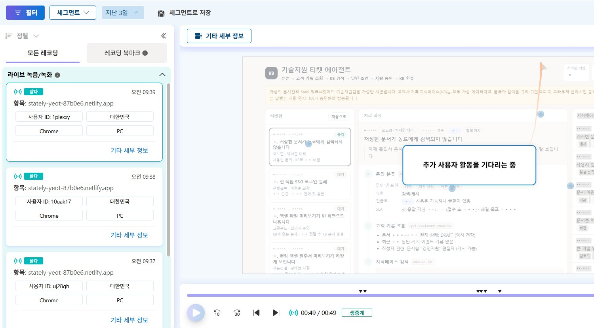
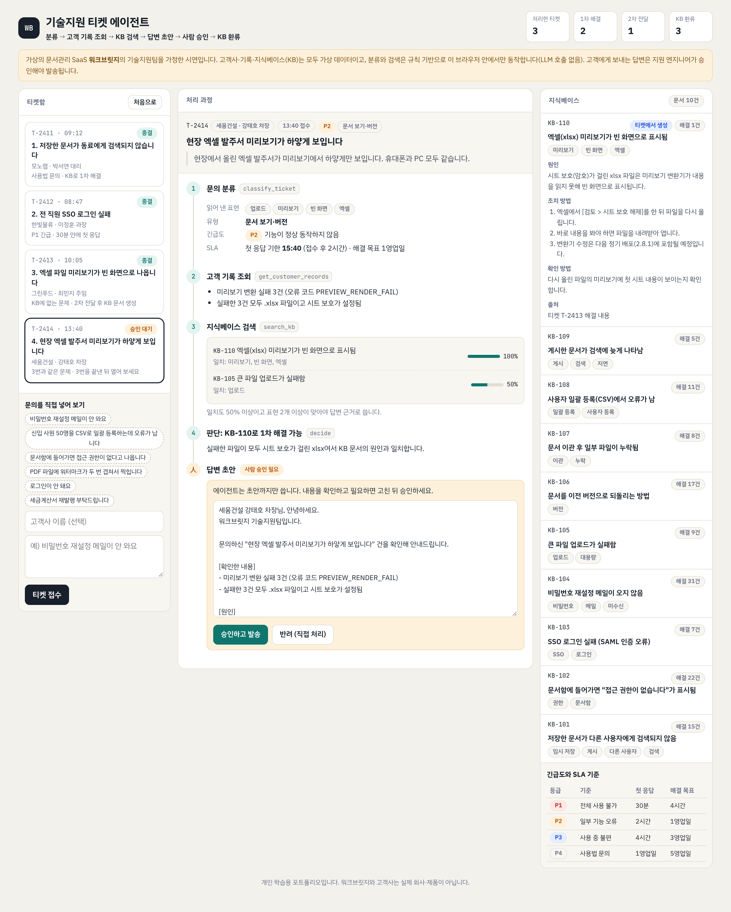
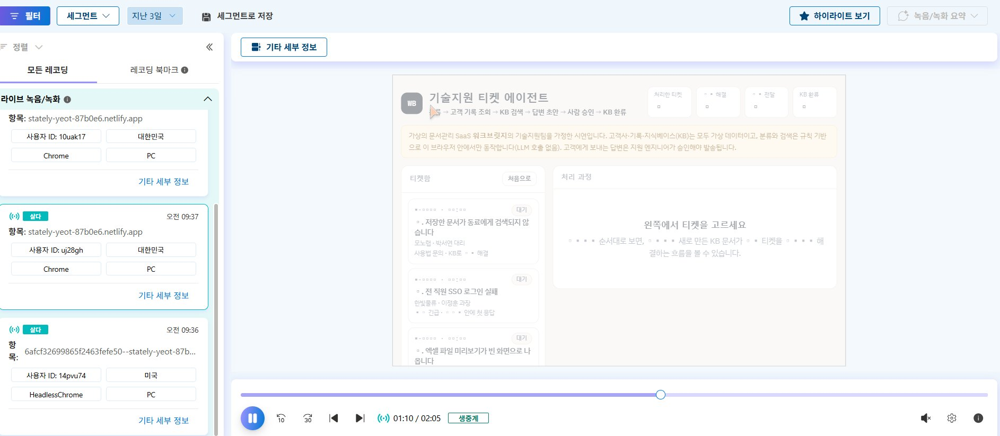
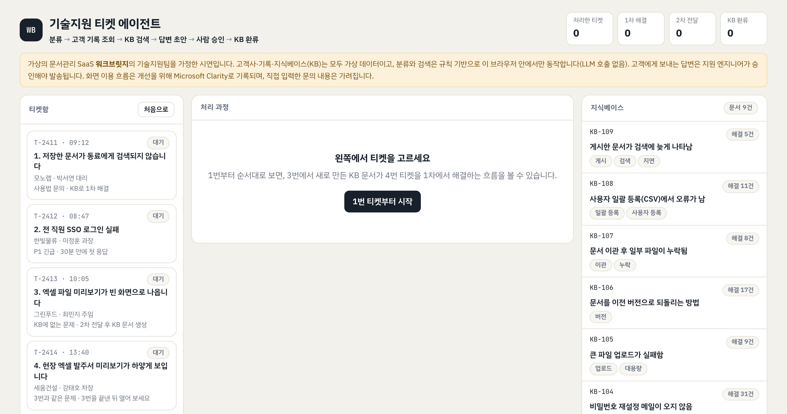

만든 에이전트를 실제로 배포하고, 방문 녹화에서
찾은 문제를 고치고, 측정할 기준을 세웠습니다.
기술지원 티켓 에이전트는 고객 문의를 분류하고, KB를 찾아 답변 초안을 쓰고, 해결된 내용을 다시 KB로 돌려보내는 시연입니다.

단일 HTML을 Netlify Drop에 올려 측정용 주소를 만들었습니다. 공개 시연은 GitHub Pages에 있습니다.
Clarity 프로젝트를 만들고 추적 코드를 페이지 <head>에 넣었습니다. 두 주소의 방문이 한 프로젝트에 쌓입니다.
방문 녹화를 다시 재생하며 어디를 누르고, 어디서 멈추는지 직접 봤습니다.
찾은 문제를 고치고, 앞으로 숫자로 비교할 수 있도록 사용자 지정 이벤트 13종을 넣었습니다.

| 녹화 | 환경 | 본 내용 |
|---|---|---|
| 1 | 대한민국 Chrome · PC | 1번 티켓을 열어 분류 → 고객 기록 → KB 검색까지 진행 (49초) |
| 2 | 대한민국 Chrome · PC | 2분 5초 중 1분 10초 시점에도 티켓을 고르지 않은 시작 화면 |
| 3 | 대한민국 Chrome · PC | 같은 주소 방문 |
| 4 | 미국 HeadlessChrome | Netlify 배포 미리보기 주소의 자동 방문 |

태그: category priority entry outcome returning · 입력한 글자는 보내지 않고 분류 결과만 보냅니다.
자동 테스트는 모두 통과했지만, 녹화에서는 시작점을 찾지 못하는 모습이 보였습니다.
녹화만으로는 비교가 어려워, 알고 싶은 질문을 먼저 적고 그에 맞는 이벤트를 설계했습니다.
가상 데이터는 분석을 위해 보이게, 방문자가 쓴 내용은 개인정보로 보고 가렸습니다.
시연과 코드, 분석 기록은 아래에서 볼 수 있습니다.